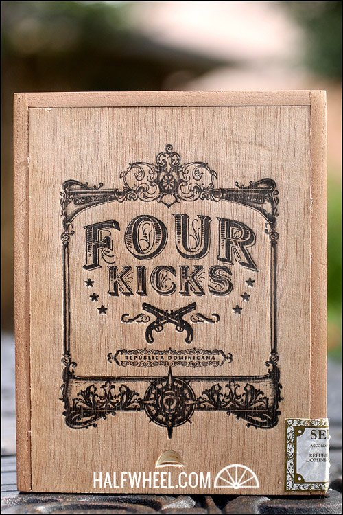
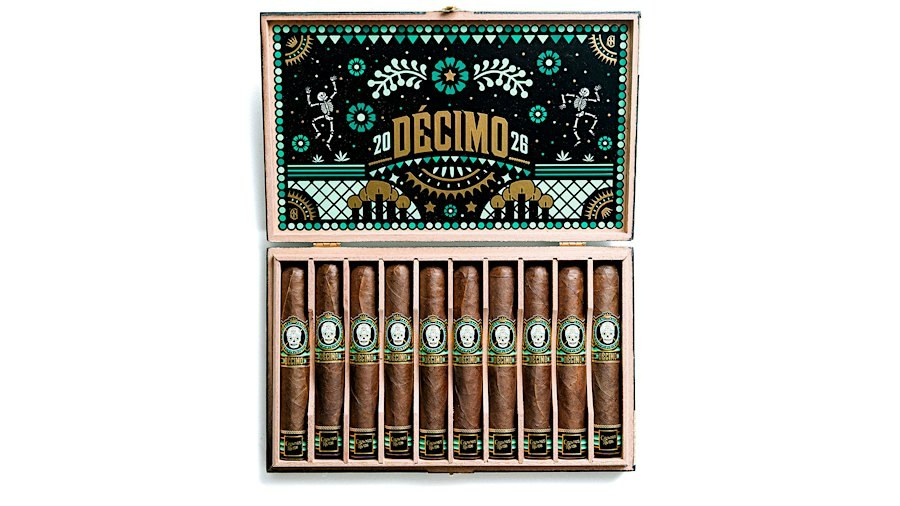
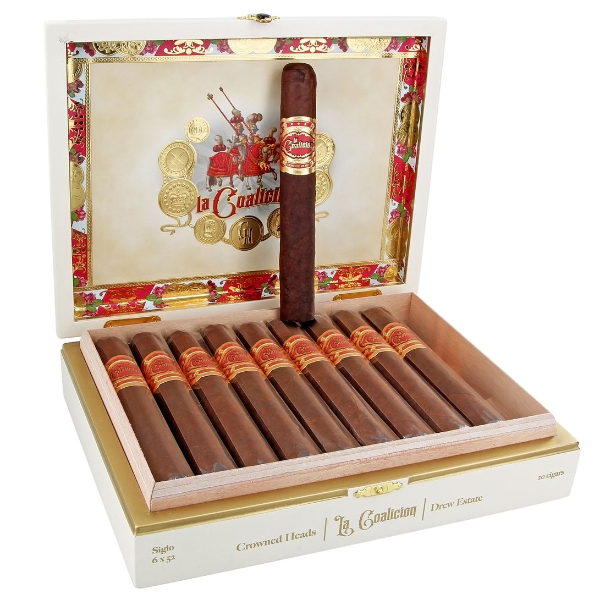
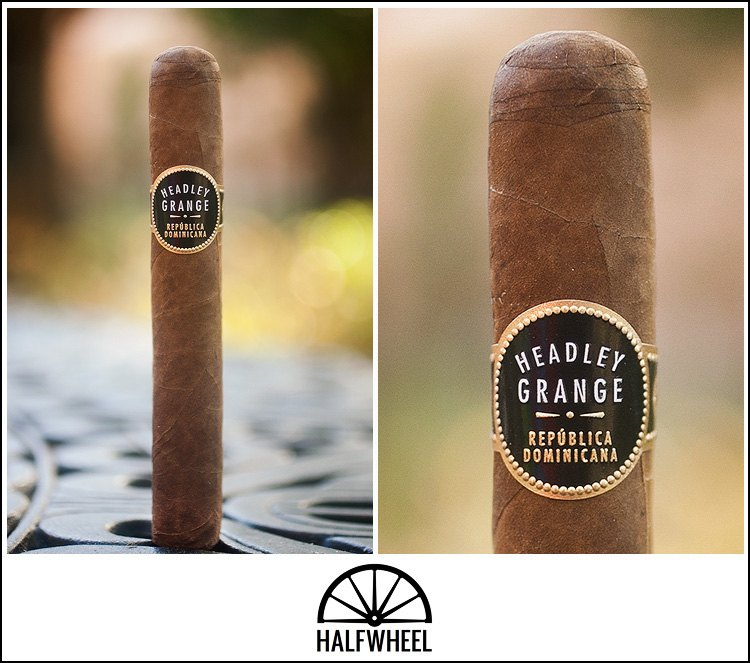
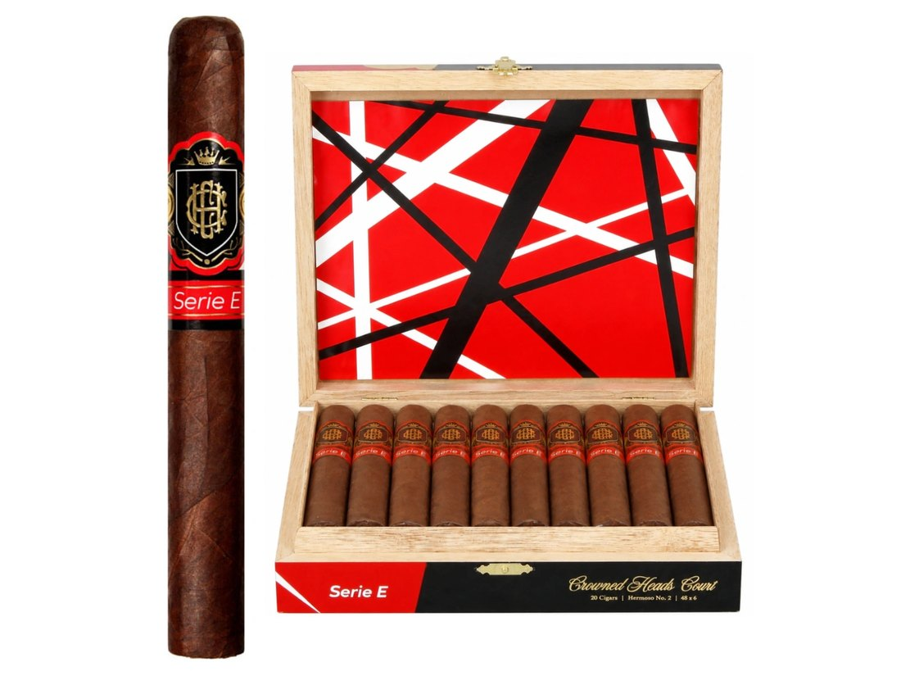
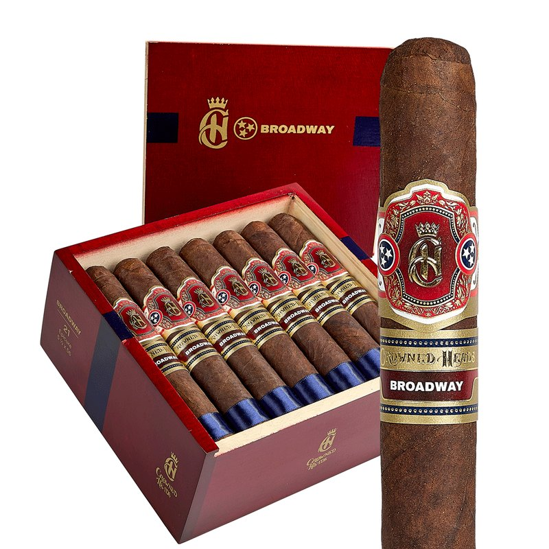

世界の葉巻ニュース 特集
特集 — クラウンデッド・ヘッズ
第7弾「タトゥアヘ」の取材のなかで、忘れられない一節に出会いました。2019年、葉巻用湿度管理製品 ボベダ（Boveda） の対談番組「Box Press」第14回。タトゥアヘの ピート・ジョンソン と並んで座った男が、こう言ったのです。
「この男は2003年に、文字通りゲームを変えた。タトゥアヘは、イリュージョネのために、クラウンデッド・ヘッズのために、そして私たち『disruptors（攪拌者たち）』をはじめ、今日のブティックブランド全員のために道を切り開いた。タトゥアヘがなければ、クラウンデッド・ヘッズはなかった」
語ったのは ジョン・ヒューバー。クラウンデッド・ヘッズ（Crowned Heads） の共同創業者です。かつて大手 CAO のマーケティング幹部だった彼は、2010年、会社が本拠ナッシュビルを去る決断をしたとき、街に残る道を選びました。元同僚4人で立ち上げた会社の名は、映画『オズの魔法使い』の一場面から。ラインの名前は、キングス・オブ・レオンの曲、レッド・ツェッペリンが録音した屋敷、ジョニー・キャッシュの歌詞、ジェシー・ジェームズの変名、そして死者の日の骸骨たち。自社工場は持たず、ラインごとに別の名工場に作らせる。発売から15年、本国アメリカでは Cigar Aficionado の Top 25 に名を連ねる確立したブティックブランドになりました。

本特集では、まず人物から入ります。フィットネスの世界から葉巻業界へ入った異色の経歴、CAO での14年、会社が街を去った日の決断。そして名前の由来、音楽と物語に彩られたラインの系譜、死者を祝う年次限定 ラス・カラベラス、ファンを「宮廷（Court）」と呼ぶ共同体、2025年の代替わりと新生までを辿り、最後に日本での流通と価格を報告します。本国での評価の高さに比べて、日本ではまだあまり知られていないブランドです。その落差も含めて、この会社の肖像を描きます。
本特集の事実関係は、専門誌・業界誌（Halfwheel、Cigar Aficionado、Cigar Journal、Cigar Coop、Cigar Press、Tobacco Business、SmokingPipes）、ブランド公式サイト、本人のインタビュー発言で裏取りした範囲に基づきます。数字や時期が媒体によって揺れるもの（CAO の買収成立年など）は断定せず両記し、裏の取れない逸話は採用していません。創業者ヒューバーの前職については「音楽業界出身」とする紹介が散見されますが、一次資料で確認できる経歴はフィットネス業界であり、本特集はそちらに従います。日本国内の価格・在庫は2026年11月12日時点の実測に基づき、認可価格は財務省の2024年5月14日付認可リストに基づきます。米国価格は当時の公表価格で、円換算は $1＝¥158 で計算しました。
◆ 一、人物 ― ジョン・ヒューバーという男
ジョン・ヒューバー の経歴は、葉巻業界では異色です。サンフランシスコで育ち、大学で運動学（キネシオロジー）を学び、ロサンゼルスではパーソナルトレーナーとして働いていました。前職は音楽業界ではありません。音楽は彼の「仕事」ではなく、後述するようにブランドの命名の源泉であり、自身も学生時代にジャズバンドでドラムを叩いた愛好家でした。この区別は、彼のブランドの成り立ちを理解するうえで大事です。音楽は売るための装飾ではなく、彼の私的な情熱の置き場所だったのです。
葉巻との出会いは、婚約者の父親の葉巻でした。そこから CAO の ラ・トラヴィアータ に惚れ込み、やがて吸う側から作る側へ。1996年、彼は当時ナッシュビルに本拠を置いた CAO に入社します。最初の仕事は箱詰めでした。そこからイベント担当を経て、最終的にはライフスタイル・マーケティングのディレクターにまで上り詰めます。「葉巻は単なる製品ではなく、文化でありライフスタイルだ」という後の クラウンデッド・ヘッズ の思想の原型は、この CAO 時代に育まれたものです。

CAO は当時、創業家オズジェナー家の下で急成長していたブランドでした。ヒューバーは約14年をこの会社で過ごします。しかし2000年代後半、業界再編の波がナッシュビルにも届きます。その結末は次章で述べます。ここでは、彼の人となりをうかがわせる小さなエピソードを一つ。駆け出しの頃、上司の ジョン・カンター から受けた助言を、彼は後年も繰り返し語っています。「懸命に働けば、いずれ誰かが見ていて表彰してくれる。だが残業の居残りをしても、誰も感謝しはしない」。独立後の彼の働き方と、会社の規模を追わない姿勢の底には、この言葉があるのかもしれません。
ロサンゼルスでトレーナーをしていた頃、市内の喫煙規制で葉巻を吸える場所はほとんどありませんでした。ヒューバーの「聖域」は、サンフェルナンド・バレーの自宅ガレージでした。トレーニング器具と葉巻の煙が同居するその空間が、彼の葉巻人生の出発点だったと、葉巻専門商社 SmokingPipes のインタビューで本人が語っています。フィットネスと葉巻。一見正反対の二つは、彼のなかでは「体と向き合う時間」という一点で地続きだったようです。
◆ 二、転機 ― 会社が街を去った日
2007年、スカンジナビア・タバコ・グループ（STG）が CAO を買収しました（成立年については、2008年にヘンリ・ウィンターマンス傘下に入ったとする媒体もあり、本特集では2007年を軸に両記に留めます）。買収後、CAO の本社はナッシュビルからバージニア州リッチモンドへ移転します。街に根ざしたブランドが、街を去る。そのときヒューバーは、会社と一緒に移ることを選ばず、2010年11月に退社しました。約14年勤めた会社の、ナッシュビルでの最後の日々でした。
2010年12月17日。彼はこの日を「CAO ナッシュビル最後の日」と呼んでいます。長年かけて集めた自分のプレスファイルを、彼はゴミ箱に捨てたといいます（Cigar Journal）。過去を処分して、前に進むための儀式だったのでしょう。そして、そのわずか4日後、元 CAO の4人――ジョン・ヒューバー、マイク・コンダー、マイケル・トレビング、ナンシー・ヒースマン――が集まりました。独立を持ちかけたのは、CAO でマーケティング上級副社長だったコンダーだったと SmokingPipes は伝えています。

4人が選んだのは、ナッシュビルに残り、自分たちの会社を作ることでした。大企業の歯車として移転するのではなく、街に根を張った小さなブランドとして独立する。社名を何にするか。答えは、思いがけない場所からやって来ます。
◆ 三、名前と出発 ― 『オズの魔法使い』とフォー・キックス
社名「クラウンデッド・ヘッズ（Crowned Heads）」の由来を、ヒューバーは2011年に Halfwheel へこう語っています。自宅で iPad で映画『オズの魔法使い』を見ていたとき、詐欺師プロフェッサー・マーベルのキャラバンに掲げられた看板が目に留まった。「The Crowned Heads of Europe: Past, Present, and Future（ヨーロッパの戴冠した首長たち：過去・現在・未来）」。彼はその場面をスクリーンショットに撮ったといいます。「王冠を戴いた頭たち」。葉巻のバンドに王冠をいただく自社の紋章と、音楽や物語への敬意を束ねるブランドの姿勢は、この一語に凝縮されていました。なお最終決定の場面については、メンバーの家族を集めた夕食の席で決まったとする記事もあり、本特集では両方に触れるに留めます。
会社 Crowned Heads, LLC は2011年、ナッシュビルに設立されました。最初から掲げたのは「葉巻だけの会社ではない」という志向です。音楽、映画、土地の物語と結びついた、文化とライフスタイルのブランドであること。その思想は、処女作の名前から既に明らかでした。
2011年11月、デビュー作 フォー・キックス（Four Kicks） が発売されます。名前は、同じナッシュビル出身のロックバンド、キングス・オブ・レオンの曲「Four Kicks」から。ヒューバーはこの曲の核を「怒り、反逆、自信、決意（anger, rebellion, confidence, determination）」と表現しました。製造を担ったのは、ドミニカ共和国の タバカレラ・ラ・アリアンサ。主宰 エルネスト・ペレス＝カリージョ にとって、他社のブランドを受ける最初の仕事でした。ラッパーはエクアドル産ハバノ。発売時は4サイズ、価格は6.95～8.65ドル（約¥1,100～1,370）。全米66店舗、3万～3万5千本という小さな船出でしたが、Halfwheel のプレリリースレビューで91点を獲得し、無名の新会社の名を業界に知らしめました。

フォー・キックス には、9年越しの続編があります。2011年の発売時、最終候補には3案のブレンドが残り、カリージョ自身はスマトラ葉を使う案を推していました。実際に採用されたのはハバノ葉の案でしたが、2020年、その「カリージョの推した版」が フォー・キックス・カパ・エスペシアル（Four Kicks Capa Especial） として発売されます。これが Cigar Aficionado で93点を獲得し、同誌 Top 25 of 2020 の第20位に入りました。却下されたはずの案が、9年後に代表作の一つになる。ブレンドの判断の難しさと面白さを象徴する逸話です。
社名の候補には、もう一つ愉快な案がありました。人気コメディ『となりのサインフェルド』の決め台詞「Serenity Now（今こそ平静を）」。ヒューバーが Halfwheel の「10の質問」で明かした裏話です。もしこちらが採用されていたら、王冠の紋章も、後の荘厳なライン名の数々も生まれなかったかもしれません。反逆者たちの会社は、紙一重で「平静」の名を逃れたのでした。
◆ 四、音楽と物語の命名学 ― ヘッドリー・グランジから無法者まで
第2作 ヘッドリー・グランジ（Headley Grange）（2012年）の名前は、曲名ではなく「場所」の名です。イギリスのヘッドリー・グランジは、レッド・ツェッペリンが「When the Levee Breaks」などを録音した屋敷。ヒューバーは「あの曲のドラムのイントロのように響くブレンドにしたかった」と語っています。味を音で設計するという、彼の命名学の真骨頂です。サイズはエスチューペンドス（5½×52）。2012年8月に1,000箱（25本入り）の限定で先行し、2013年春に5サイズで定番化されました。ラッパーはエクアドル産スマトラ、製造は タバカレラ・ラ・アリアンサ。Cigar Aficionado で91点、同誌 Top 25 of 2012 の第24位に入っています。後にドラムスティック、スネアドラム、ブラック・ドッグ・マデューロといった派生も生まれました。
この名前は、小さな法廷闘争も呼びました。2012年10月、農業団体ナショナル・グランジが商標の異議を申し立て、クラウンデッド・ヘッズ はナッシュビルの連邦地裁に訴えを起こしています。「グランジ」という言葉の帰属をめぐる争いでした。その後の帰趨については、本特集の調査では確かな記録に行き当たらなかったため、ここでは事実の発生に留めます。なお現在も ヘッドリー・グランジ は販売が続いています。
 J.D. ハワード・リザーブ。無法者の変名を冠した、ブランド初のマデューロ（販売店の商品写真）第3作 J.D. ハワード・リザーブ（J.D. Howard Reserve） は、2013年2月14日に Cigar Aficionado が発表を伝え、同年の見本市 IPCPR でデビューしました。「J.D. ハワード」とは、無法者ジェシー・ジェームズが1875年から1881年にかけてナッシュビルで暮らした際に使った変名です。当時の地元紙ナッシュビル・バナーは、1882年4月18日付で「過去数年、この街は史上最大の強盗の本拠だった」と書きました。ブランドの公式ページは、この新聞引用を掲げてラインの由来を説明しています。ラッパーはブラジル産アラピラカで、ブランド初のマデューロ。サイズは HR46／48／50／52／54 の5種、製造は タバカレラ・ラ・アリアンサ。2015年には限定のシングル・アクションも出ています。
J.D. ハワード・リザーブ。無法者の変名を冠した、ブランド初のマデューロ（販売店の商品写真）第3作 J.D. ハワード・リザーブ（J.D. Howard Reserve） は、2013年2月14日に Cigar Aficionado が発表を伝え、同年の見本市 IPCPR でデビューしました。「J.D. ハワード」とは、無法者ジェシー・ジェームズが1875年から1881年にかけてナッシュビルで暮らした際に使った変名です。当時の地元紙ナッシュビル・バナーは、1882年4月18日付で「過去数年、この街は史上最大の強盗の本拠だった」と書きました。ブランドの公式ページは、この新聞引用を掲げてラインの由来を説明しています。ラッパーはブラジル産アラピラカで、ブランド初のマデューロ。サイズは HR46／48／50／52／54 の5種、製造は タバカレラ・ラ・アリアンサ。2015年には限定のシングル・アクションも出ています。
一部の小売ブログなどには、J.D. ハワードをもう一人の無法者ビリー・ザ・キッドと結びつける記述が見られます。しかしブランド公式の由来説明も、根拠となる1882年のナッシュビル・バナーの記事も、一貫してジェシー・ジェームズの変名としています。本特集は公式の説明に従い、ビリー・ザ・キッド説は採用しません。名前の由来は、必ず一次の説明に当たること。地味ですが、葉巻の命名を扱う際の鉄則です。
こうして並べてみると、命名の型が見えてきます。曲（フォー・キックス）、場所（ヘッドリー・グランジ）、人物と物語（J.D. ハワード）。いずれもヒューバー自身が敬意を払う対象への「トリビュート（献辞）」です。次章の死者への献辞は、この型の到達点でした。
◆ 五、死者を祝う ― ラス・カラベラス
2014年2月発表、5月21日発売の ラス・カラベラス（Las Calaveras） は、ブランドの転機となった限定シリーズです。製造は初めて ラ・アリアンサ を離れ、第4弾で辿った マイファザー・シガーズ との初協業になりました。着想源はメキシコの「死者の日」と、版画家ホセ・グアダルーペ・ポサーダの骸骨版画「ラ・カラベラ・カトリーナ」。そして何より、前年に亡くなった、会社に近い人たちへの年次トリビュートでした。
ヒューバーの言葉の核心は「悼むのではなく、生き様を祝う」です。死を暗く悲しむのではなく、その人が生きたことを祝うための葉巻。2014年版は LC550／LC652／LC754 の3サイズ、各1,000箱（24本入り）、ラッパーはエクアドル産ハバノ・オスクーロ、価格は8.95ドル（約¥1,410）でした。Halfwheel で94点を獲得し、同誌の Top 25 of 2014 で第4位。翌2015年版も第14位、2021年版も第18位と、年次限定としては異例の評価を積み重ねていきます。

2016年以降は年4ビトラの体制となり、毎年の発売が本国の愛好家にとっての年中行事になりました。2024年には10周年を記念する デシモ・アニベルサリオ（Décimo Aniversario）（6×52、18.95ドル＝約¥3,000、2,500箱・10本入り）が登場。そして2026年版も本サイトのニュースで報じた通り発売されています（2026年11月7日付の記事で紹介）。10年以上続く年次限定が、毎年きちんと「その年に亡くなった人への献辞」であり続けること。コンセプトの持続力こそ、このシリーズの本当の価値です。

◆ 六、工場を持たない男たち ― ラインごとに別の名工房
クラウンデッド・ヘッズ の最大の特徴は、自社工場を持たないことです。ただし「持てない」のではありません。ラインごとに、そのブレンドに最適な工場を選ぶという設計思想です。ドミニカの タバカレラ・ラ・アリアンサ（カリージョ）、ニカラグアの マイファザー、同じくニカラグアの タバカレラ・ピチャルド、そして ドリュー・エステート。米国のブティックブランドのなかでも、これほど明確に「製造の多元主義」を貫く例は多くありません。
ジェリコ・ヒル（Jericho Hill）（2014年）は、マイファザー で作る初の定番ライン。名前はジョニー・キャッシュの「コカイン・ブルース」の歌詞に登場する地名から採られ、ラッパーはメキシコ産サンアンドレスです。同年には州限定の テネシー・ワルツ（Tennessee Waltz） も出ました。当初テネシー州だけの限定品で、名前はヒューバーの祖父母がダンスで出会ったときに流れていた曲。1948年にスチュワートとキングが書き、1965年にテネシー州の州歌になった曲です。州限定の試みは続き、テキサス州の イエロー・ローズ（2015年）、ハワイ州の パニオロ・エスペシアーレ（2015年）、オハイオ州の バックアイ・ランド（2018年、ドリュー・エステート 製）へと広がりました。店舗限定では、テネシー州コロンビアの BriarWorks のための フォー・キックス 444、業界団体 TAA 限定の ジ・エンジェルズ・アンビル（2014～2017年、名前はヒューバー自身の短編小説から）もあります。本拠とその周辺に厚く、全国に広く。この配分の形が、このブランドの人気の地理を物語ります。

ラ・インペリオーサ（La Imperiosa）（2015年）は、ラス・カラベラス 2014年限定版のブレンドを定番化したラインです。見本市 IPCPR 2015 で発表され、同年7月に出荷。4サイズ、8.25～9.75ドル（約¥1,300～1,540）。名前と意匠は1900年代初頭のキューバの旧ブランドに由来し、商標は2014年に出願されています。製造は マイファザー。ただし Halfwheel は後年、定番版の味わいは限定版とまったく同一ではないと指摘しています。「同じブレンドの定番化」という謳い文句と実際の味の差異は、分けて受け取るべきでしょう。
 ル・カレームの箱と単品。青い「C」のバンドが目印です（写真：Entre Humos）料理人の名を冠した2ラインも対照的です。ル・カレーム（Le Carême）（2016年）は、フランス料理の礎を築いたマリー＝アントワーヌ・カレームへの献辞。コネチカット・ブロードリーフをまとい、製造は ラ・アリアンサ。一方の ル・パティシエ（Le Pâtissier）（2021年）は、当初 PCA の限定品として発表され、同年12月6日に出荷されました（6½×44、10.50ドル＝約¥1,660）。似た世界観の名前ですが、ブレンドも工場も異なり、こちらは ピチャルド 製です。
ル・カレームの箱と単品。青い「C」のバンドが目印です（写真：Entre Humos）料理人の名を冠した2ラインも対照的です。ル・カレーム（Le Carême）（2016年）は、フランス料理の礎を築いたマリー＝アントワーヌ・カレームへの献辞。コネチカット・ブロードリーフをまとい、製造は ラ・アリアンサ。一方の ル・パティシエ（Le Pâtissier）（2021年）は、当初 PCA の限定品として発表され、同年12月6日に出荷されました（6½×44、10.50ドル＝約¥1,660）。似た世界観の名前ですが、ブレンドも工場も異なり、こちらは ピチャルド 製です。
フアレス（Juárez）（2018年12月発表）は、当初 Thompson Cigar の専売品として始まり、ピチャルド が初めて手がけた クラウンデッド・ヘッズ のラインになりました。開発の注文は「手頃な価格のジェリコ・ヒル的な一本」。3サイズ、5.95～7.95ドル（約¥940～1,260）という価格帯がそれを物語ります。名前もまた「コカイン・ブルース」の歌詞――「フアレスで追いつかれた」の一節から。製造元の タバカレラ・ピチャルド は、キューバ出身の農学者エラディオ・ピチャルド（亡命前はキューバの葉巻産業で要職にあった人物）が2005年にダトゥエイ・タバコスとして創業した工場です。そして ラ・コアリシオン（La Coalición）（2019年発表、同年11月20日出荷）は、ドリュー・エステート のブレンダー、ウィリー・エレーラとの真の共同開発で、同社の ラ・グラン・ファブリカ で作られました。コネチカット・ブロードリーフ、4サイズ、10.95～14.95ドル（約¥1,730～2,360）。Halfwheel のコンセンサス Top 25（2019年）にも入っています。
ミル・ディアス（Mil Días） は、時間の物語です。2017年の IPCPR で、ピチャルド側から渡されたサンプルが起点となり、製品化までにおよそ1,000日を費やしました。「ミル・ディアス」はスペイン語で「千日」。バンドの「M」の字は、ローマ数字の1,000でもあります。2020年7月に発表されたこのラインは、エクアドル産ハバノのラッパー、ニカラグアのバインダー、コスタリカ・ニカラグア・ペルー産のフィラーという多国籍な構成です。ピッグテールの付いたトペス（4⅞×56）は2023年の PCA で追加されました。なお2020年に結ばれた ACE プライム との提携は、同社が2022年に ルチアーノ・シガーズ へ改称した後、2023年までに解消され、ミル・ディアス の生産は同じ建物の別工場へ移っています。提携と解消の詳細は本特集の範囲を超えるため、骨格に留めます。

| ライン（デビュー） | 製造工場 | ラッパー | 命名・備考 |
|---|---|---|---|
| フォー・キックス（2011） | タバカレラ・ラ・アリアンサ | エクアドル・ハバノ | キングス・オブ・レオンの曲名 カリージョ最初の顧客ブランド |
| ヘッドリー・グランジ（2012）  | タバカレラ・ラ・アリアンサ | エクアドル・スマトラ | ツェッペリン録音の屋敷 CA 91点・Top 25 of 2012 第24位 |
| J.D. ハワード・リザーブ（2013） | タバカレラ・ラ・アリアンサ | ブラジル・アラピラカ | ジェシー・ジェームズの変名 ブランド初のマデューロ |
| ラス・カラベラス（2014〜） | マイファザー | 年により変動（2014年はエクアドル・ハバノ・オスクーロ） | 死者への年次トリビュート Halfwheel 94点・同誌2014年 第4位 |
| ジェリコ・ヒル（2014） | マイファザー | メキシコ・サンアンドレス | ジョニー・キャッシュの歌詞から マイファザー初の定番ライン |
ラ・インペリオーサ（2015） | マイファザー | エクアドル・ハバノ・オスクーロ | ラス・カラベラス2014の定番化 名は1900年代初頭のキューバ銘柄 |
| ル・カレーム（2016） | タバカレラ・ラ・アリアンサ | コネチカット・ブロードリーフ | 料理人カレームへの献辞 日本でも販売中（日本編） |
フアレス（2018） | タバカレラ・ピチャルド | メキシコ・サンアンドレス | 「コカイン・ブルース」の地名 ピチャルド初の同社ライン |
| ラ・コアリシオン（2019） | ドリュー・エステート | コネチカット・ブロードリーフ | ウィリー・エレーラとの共同開発 |
ミル・ディアス（2020） | タバカレラ・ピチャルド | エクアドル・ハバノ | 約千日のブレンド 「M」はローマ数字の千 |
ル・パティシエ（2021） | タバカレラ・ピチャルド | コネチカット・ブロードリーフ | 「パティシエ」の意 ル・カレームとは別ブレンド |
| CHC セリエ E（2021）  | タバカレラ・ピチャルド | エクアドル・ハバノ・オスクーロ | ヴァン・ヘイレン「Eruption」 ファン組織「コート」のライン |
コロネータ（2023） | NACSA | ハバノ／マデューロ | 日本の認可データに記録あり 写真は確認できず |
| ブロードウェイ（2025）  | 未確定（NACSA と目される） | コネチカット・ブロードリーフ | 新ロゴ・サブバンド初適用 ナッシュビルの目抜き通り |
ここに、現代のブティックシガーを貫く一つの「型」が見えてきます。工場を持たないブランド屋と、その味を保証する巨匠の工場です。タトゥアヘ の物語も同じ型でした。ブランド屋 ピート・ジョンソン の背後には、マイファザー を率いる ドン・ペピン・ガルシア がいた。そして クラウンデッド・ヘッズ の背後には、ラ・アリアンサ の エルネスト・ペレス＝カリージョ がいます。若い反逆者は世界観と物語を担い、キューバ亡命世代の巨匠が、葉の目利きと巻きの精度でそれに応える。ヒューバーが フォー・キックス の製造を託した相手は、当時すでに伝説と呼ばれた男でした。
カリージョは「ブティック・シガーのゴッドファーザー」と讃えられる人物です。ラ・グロリア・クバーナ（米国版）を1990年代のブームの頂点へ押し上げ、ブランドを手放したのち2009年に独立。E.P. Carrillo の名で、Encore（2018年）と Pledge（2020年）に Cigar Aficionado の年間第1位を射止めました。しかも彼もまた、若い頃にドラマーを夢見た男です。スティックを握るはずだった手が葉を選び、ドラムを叩いた男がその葉巻に名を与えた。ドラマーを夢見た者同士というのも、第7弾と本稿を貫くもう一つの対称でしょう。そして巨匠たちは、若いブランド屋の背後に立つだけの存在ではありません。ドン・ペピンは自らの名を冠した マイファザー で、カリージョは E.P. Carrillo で、それぞれ頂点を極めた。亡命世代の二人は、他人の物語の名脇役であると同時に、自分自身の物語の主役であり続けたのです。
◆ 七、宮廷とギター ― ファンコミュニティ「コート」
この会社のファンは、自らを「コート（the Court＝宮廷）」と位置づけられます。王冠のブランドにとって、ファンは臣下であり、同時に王を支える宮廷の構成員だというわけです。ファン向けのラインには CHC（Crowned Heads Court）の名が冠され、2018年には コート・リザーブ XVIII が出ました。ブランドとファンの距離の近さは、限定品の売り方にも表れています。年次の ラス・カラベラス が毎年発売直後に姿を消すのは、この共同体の結束あってのことです。
その象徴が CHC セリエ E（CHC Serie E）（2021年）です。「E」は、エディ・ヴァン・ヘイレンのギター・インストゥルメンタル「Eruption」への献辞。ヒューバーは「この葉巻を吸う体験の、音によるメタファーだ」と表現しました。箱の内蓋とバンドには、ヴァン・ヘイレンのギター「フランケンシュトラト」を思わせる赤・黒・白のストライプ。サイズ名にも仕掛けがあり、5150（5½×50）は彼のアルバムのタイトルから採られています。4サイズ、10.25～12.25ドル（約¥1,620～1,940）。PCA 2021 で発表され、同年8～9月に出荷されました。製造は タバカレラ・ピチャルド。ロックの名演を「味の設計図」にする発想は、ヘッドリー・グランジ以来の彼の真骨頂です。2022年には、ルネサンス絵画のぼかし技法と調名を重ねた スフマート・イン・Cメジャー も発表されています。
◆ 八、代替わりと新生 ― オズジェナー家の帰還
2025年、会社は大きな転機を迎えました。共同創業者の マイク・コンダー が同年4月に引退したのです（業界歴45年、以後は顧問として残ります）。その持ち分を取得したのは、ティム・オズジェナー。CAO の創業者カヌ・オズジェナーの息子であり、2022年に自身のブランド OZ ファミリー・シガーズ を立ち上げていた人物です。ティムが CEO に就き、ヒューバーは共同オーナーのまま社長（President）を務める。COO にアダム・シェパード、営業担当副社長にミゲル・ショーデルという布陣で、2026年の PCA までには、クラウンデッド・ヘッズ と OZ ファミリー・シガーズ が「1社2ブランド家族」として運営される体制になりました。
象徴的なのは、その構図です。かつて CAO を去って独立した男たちの会社に、CAO 創業家の息子が経営者として「帰って」きた。企業買収で街を去った旧会社の物語と、街に残った者たちの物語が、15年越しに再び交わったのでした。
新生の第一作が ブロードウェイ（Broadway）（2025年6月19日出荷）です。コネチカット・ブロードリーフをまとい、ポートフォリオ全面刷新――新しいメインロゴと、ブレンドごとのサブバンド――を初めて適用したラインになりました。名前は、本拠ナッシュビルの目抜き通り。第二章で触れた、あの夜景の通りです。なお製造工場については NACSA と目されますが、本特集の調査では確定に至らなかったため、表では「未確定」と記しました。
ヒューバー自身の現在地は、Cigar Press の2025年の企画「Unusual Suspects 2」が伝えています。当初は限定品という手法に反対だったこと。今も自分のブランドで好きなのは、初代 フォー・キックス と テネシー・ワルツ だということ。出発点と故郷。この二つを挙げるあたりに、彼の15年の核があります。ちなみに2012年、同誌の初代「Unusual Suspects」の表紙には、ヒューバーと並んで ピート・ジョンソン、ジョナサン・ドリュー、マット・ブース、ディオン・ジオリト、ジョージ・リコの姿がありました。2012年3月12日、マイアミで撮られたその表紙を、ヒューバーは今も誇りの一つに挙げています。「タトゥアヘがなければ私たちはなかった」という言葉は、この並びのなかで交わされた、同時代の反逆者同士の敬意だったのです。
◆ 日本編 ― 日本では、まだあまり知られていない
率直に言えば、クラウンデッド・ヘッズ は日本ではまだあまり知られていません。本国アメリカでの姿と並べると、その落差は際立ちます。アメリカでは、Cigar Aficionado の Top 25 に入り、年次限定 ラス・カラベラス が毎年の発売直後に姿を消す、確立したブティックブランドです。人気の中心は本拠テネシー州を軸とした南部で、州限定品や店舗限定品の厚みがその証拠です。一方で海外展開は遅く、たとえば英国で正規の流通が始まったのは2026年5月のこと（Barkers of Harrogate の専売）。Halfwheel はその際、「このブランドは英国の小売店で販売されたことがなかった」と指摘しました。日本の薄さは、この国際展開の遅れの裏面なのです。
それでも、日本への回路は細く開いています。財務省の認可リストでは、2024年5月14日付で6品目が認可されました。そして販売が確認できる窓口が、RACC（レイジング・アッシーズ・シガー・クラブ） さんです。RACC さんは6品目すべてを扱い、その販売価格は認可価格と一致しています。輸入元は公表されていませんが、価格の一致から、RACC さんが輸入元を兼ねているとみられます。
2026年11月12日時点の在庫を実測すると、景色は二面的です。バラ（単品）は、売り切れの ル・パティシエ を除いて静かに残っている。一方で箱は、6品目すべてが売り切れでした。知る人ぞ知る需要が箱を消し、知名度の低さがバラを残す。その両方が同時に見える棚は、「まだ知られていない」ことの何よりの証拠でしょう。なお沼津の ことぶき屋杉本商店 さんにはブランドの紹介ページがありますが、商品の掲載はなく、取り扱いは既に終えているとみられます。日本の葉巻メディアでの露出も、現時点ではごくわずかです。
| 品目 | 国内価格 | RACC さんの在庫（2026年11月12日実測） | 製造工場 |
|---|---|---|---|
| フアレス（150mm） | ¥2,750 | バラ：在庫あり 箱（20本・¥55,000）：売り切れ | タバカレラ・ピチャルド |
| ル・パティシエ（150mm） | ¥2,850 | バラ・箱（20本・¥57,000）とも売り切れ | タバカレラ・ピチャルド |
| ル・カレーム（145mm） | ¥2,990 | バラ：在庫あり 箱（24本・¥59,800）：売り切れ | ラ・アリアンサ（カリージョ） |
| ジェリコ・ヒル（150mm） | ¥3,250 | バラ：在庫あり 箱（24本・¥78,000）：売り切れ | マイファザー |
| ミル・ディアス・トペス（120mm） | ¥3,700 | バラ：在庫あり 箱（20本・¥74,000）：売り切れ | タバカレラ・ピチャルド |
| ミル・ディアス・ダブルロブスト（160mm） | ¥3,800 | バラ：在庫あり 箱（20本・¥76,000）：売り切れ | タバカレラ・ピチャルド |
6品目の顔ぶれは、このブランドの縮図です。マイファザー 製の ジェリコ・ヒル、カリージョ系の ル・カレーム、そして ピチャルド 製の4品目。「工場を持たない男たち」の設計思想が、そのまま日本の棚にも届いています。入り口としては、価格の手頃な フアレス、千日の物語を味わう ミル・ディアス が向いているでしょう。
◆ 結び ― 王冠は、去らなかった者たちの頭に
会社が街を去った日、残ることを選んだ4人がいました。王冠の名は映画の看板から、ラインの名は歌と物語から。工場は持たず、名工房との協業で15年を積み上げ、本国では「確立したブティック」の座に就きました。そしていま、創業家の息子を経営者に迎え、会社は第二章に入っています。
ヒューバーが今も好きだと公言する自社作は、初代 フォー・キックス と、故郷の テネシー・ワルツ です。出発点と故郷は、この先も変わらないのでしょう。第7弾の言葉を借りれば――タトゥアヘが切り開いた道の先に、ナッシュビルに残った男たちの王冠がありました。日本でこの王冠が「事件」になる日が来るかどうかは、まだ分かりません。ただ、認可と販売の回路は、既にここにあります。